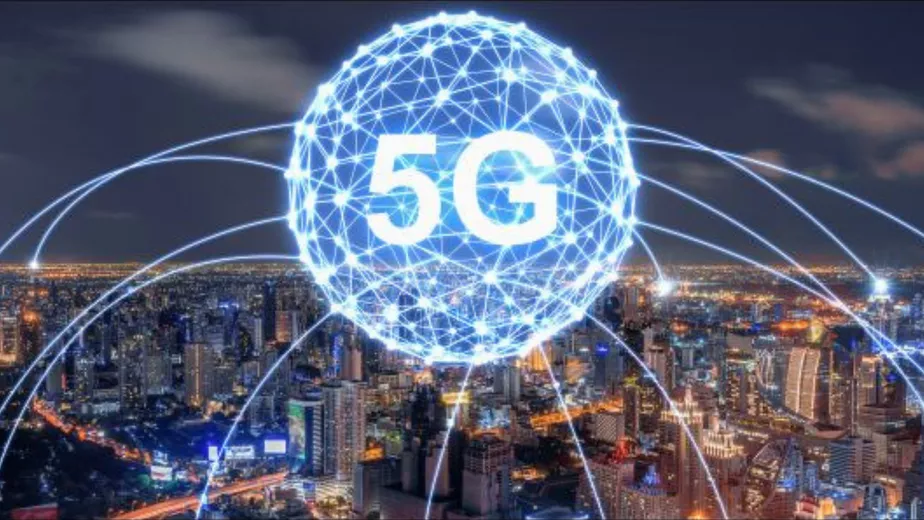
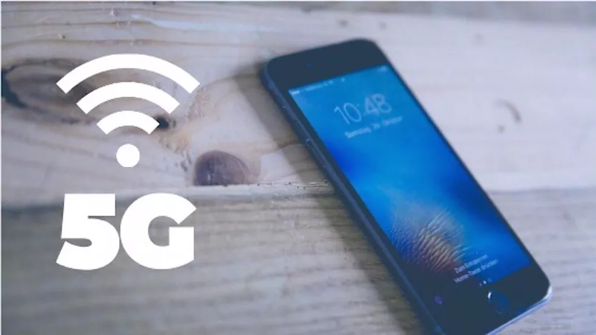

Internet
Internet no celular: as diferenças entre 5G e Wi-Fi de 5 GHz
A recente promessa de internet 5G nos celulares tem provocado rebuliço nas operadoras de telefonia, nas fabricantes de celulares e nos usuários. Também tem despertado confusão: parcela dos consumidores ainda não sabe distinguir essa nova tecnologia de internet móvel (o 5G) da versão mais moderna do Wi-Fi (o 5 GHz). Como você verá nas linhas a seguir, a única semelhança entre elas é que ambas são redes sem fio – nada mais.er, NASA, Sony, Comcast e Nasdaq.
Muito antes da internet 5G se tornar conhecida, a tecnologia Wi-Fi já vinha sendo melhorada para oferecer uma conexão de internet sem fio mais rápida e com menos interferência. Assim surgiu o Wi-Fi de 5 GHz, que se popularizou por meio do apelido “Wi-Fi 5G”. Entretanto, o termo “5G” não tem nada a ver com “Wi-Fi”.
A tecnologia de internet móvel permite que o celular funcione como um modem, fornecendo sinal de internet para ele próprio – o que exclui a necessidade de uma conexão com roteadores externos. Sua evolução mais significativa se popularizou com a chegada do 3G, a internet da terceira geração, e depois com a evolução para o 4G. Hoje é possível vislumbrar o acesso 5G, sigla que indica que a quinta geração de internet móvel está chegando ao mercado.

Wi-FI 5 GHz
Wi-Fi indica uma conexão de internet de um dispositivo com outro sem a necessidade de fios. Até 1999, o Wi-Fi operava com a frequência de 2,4 GHz – ou seja, os dados trafegavam por ondas neste “caminho”. A partir daquele ano, foi inaugurada uma nova “pista” para a troca de informações entre equipamentos – a frequência de 5 GHz se tornou realidade na informática.Todavia, sua popularização só ocorreu em 2009, quando o mercado evoluiu para esta tecnologia e passou a fabricar dispositivos que se conectassem com a nova banda. Os principais benefícios do Wi-Fi de 5 GHz são a velocidade mais rápida e a interferência.